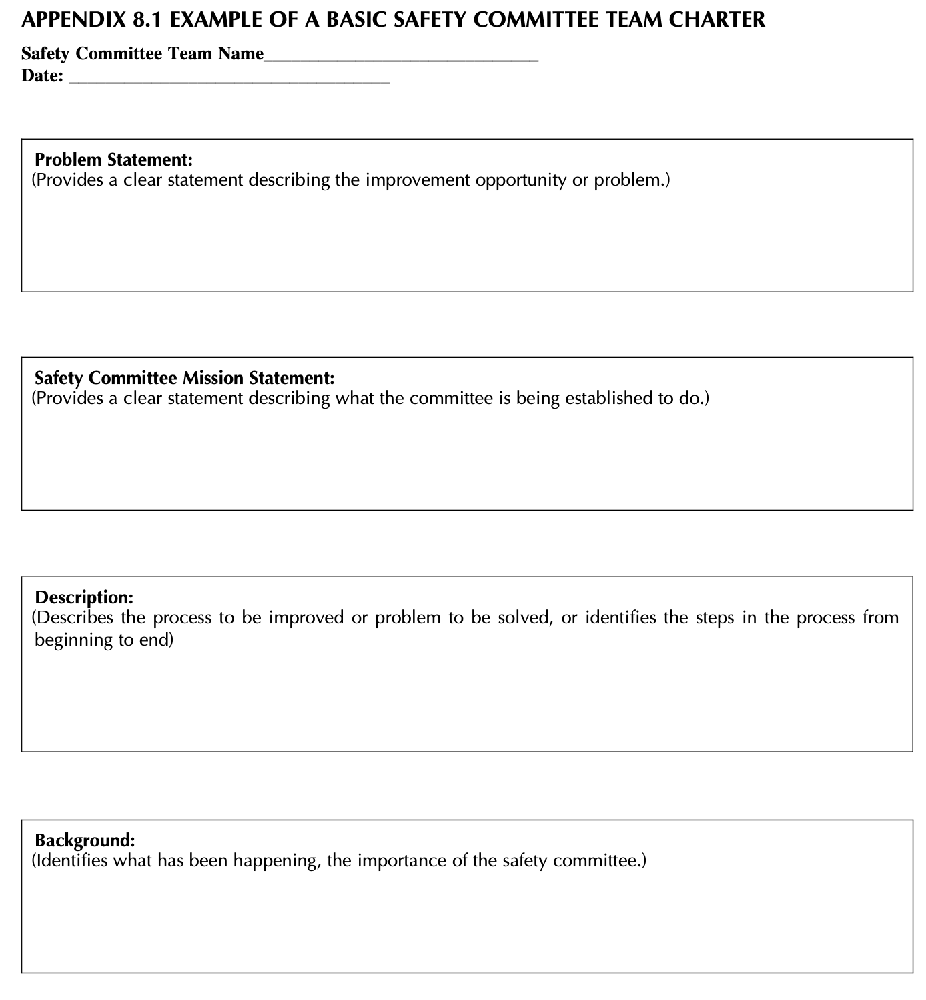
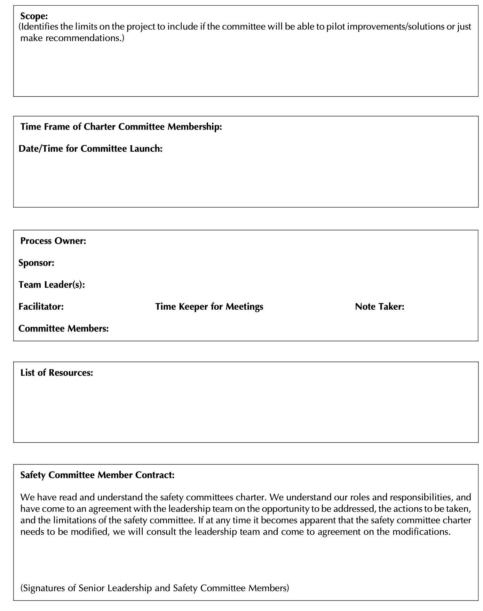
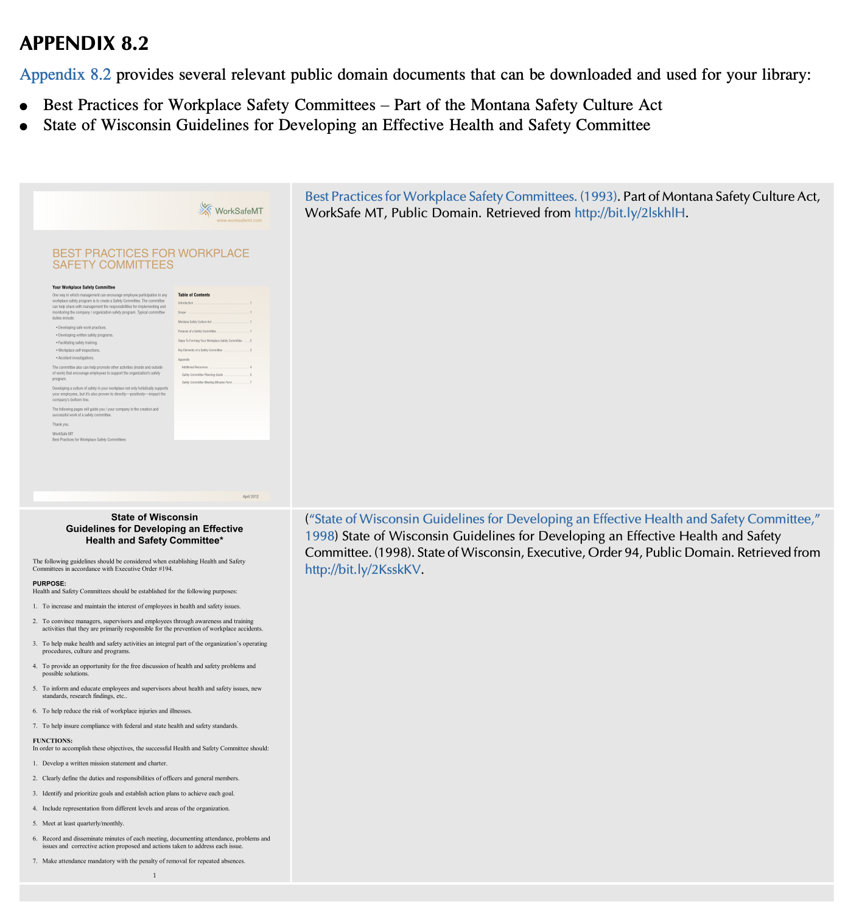

Chapter 8: Getting Employee Involvement in the Safety Management System
📌 0. 챕터 개요 & 핵심 명언
"훌륭한 인재로 시작하라. 규칙을 명확히 제시하라. 직원들과 소통하라. 그들에게 동기를 부여하고 보상하라. 이 모든 것을 효과적으로 수행한다면 결코 실패하지 않을 것이다."
안전 전문가는 혼자 고립되어 안전 문제를 해결할 수 없습니다. 진정한 안전문화의 성패는 현장 최일선에서 유해위험요인과 직접 마주하는 직원들의 자발적 참여(Employee Involvement)에 달려 있습니다.
📖 1. 도입 및 6대 학습 목표 (INTRODUCTION)
경험 많은 직원은 잠재적 위험에 가장 근접해 있는 대체 불가능한 문제 해결사(Problem-solvers)입니다. 경영진과의 개방적이고 긍정적인 소통이 결합될 때 비로소 숨은 위험이 통제되고 안전문화가 정착됩니다.
제8장 핵심 학습 목표 (6가지)
- 직원이 안전경영시스템에 참여해야 하는 당위성 설명 (*Discuss why employees should be involved*)
- 직원 참여 표준 가이드라인 파악 (*Discuss guidelines for employee involvement*)
- 안전 프로세스 효과성에 관한 현장 통찰을 얻는 최선의 방법 식별 (*Identify best method to get insights*)
- 직원들이 안전 프로세스 참여를 꺼리는 근본 원인 분석 (*Discuss why employees may not want to be involved*)
- 안전위원회(Safety Committee)의 구조와 상설 분과위원회 운영 원리 이해 (*Structure of Safety Committee & subcommittees*)
- 특별 임무팀(Ad Hoc Subcommittees)의 개념과 효과적 실행 방안 규명 (*Ad Hoc subcommittees implementation*)
🎯 2. 왜 직원이 참여해야 하는가? (WHY SHOULD EMPLOYEES BE INVOLVED?)
경영진의 인식과 현장 실행 간의 심각한 괴리
경영진은 목표와 정책을 수립하지만, 현장의 세부 작업 단계를 모두 알지 못합니다. 저자들이 다양한 기업의 작업위험성평가(JHA)를 지원하면서 발견한 핵심 사실은 "경영진이 현장에서 이루어지고 있다고 믿는 방식과, 실제 작업자가 수행하는 작업 방식 간에 엄청난 차이가 존재한다"는 점이었습니다.
미통제 위험의 일상화와 수용
직원들은 위험을 비공식적 요령(Word of mouth)으로 피해 가거나, 심지어 통제되지 않은 위험을 "어쩔 수 없는 내 일의 일부(Part of their job)"로 받아들여 침묵합니다.
직원 참여를 유도하는 4대 기본 조치
🚫 3. 직원이 참여하지 않는 이유 (REASONS FOR NON-INVOLVEMENT)

회의실 원형 테이블에 둘러앉아 화상 화면("LIVE")을 통해 공유되는 리더의 발표와 안건을 함께 경청하고 토론하는 다기능 팀원들의 모습을 보여줍니다. 안전관리는 한 사람의 일방적 지시가 아니라, 다양한 부서의 구성원이 동등한 테이블에 모여 소통하는 참여형 프로세스여야 함을 시각화합니다.

좌측에 서 있는 리더가 직원들에게 제안을 요청하자, 화살표를 따라 개별 직원의 의견이 모이고 소그룹에서 대규모 직원 집단으로 참여 네트워크가 연쇄적으로 확산되는 구조를 보여줍니다. "직원에게 직접 물어보라"는 단순한 출발이 전사적 참여 네트워크를 형성하는 기폭제가 됨을 상징합니다.
참여 부재의 근본 원인
- 공식적 참여 창구 부재: 직원이 의견을 공식적으로 개진할 시스템이 없습니다.
- 생산성 저해 요소로의 오인: 안전을 '생산성을 방해하는 일' 또는 '내 본업 밖의 귀찮은 일'로 봅니다.
- 단순 법적 규제 준수 한계: 법적 의무만 강조되어 직원이 기여할 자율적 공간이 없습니다.
개인보호구(PPE) 의존의 함정과 통제 계층(Hierarchy of Controls)
직원이 보호구를 착용하지 않는 것은 직원의 태만 이전에 직원이 안전 프로세스에 참여하지 못하고 있다는 반증입니다. 보호구는 통제 계층상 최후의 수단(Final line of defense)임에도 많은 관리자가 손쉽다는 이유로 보호구 지급을 기본값(Default)으로 삼는 맹점을 보입니다.
🔍 4. 관찰 1: 권위주의 처방의 실패 사례 (OBSERVATION 1)
안구 부상 이력이 없던 공장에서 한 직원의 눈에 먼지가 들어가자, 경영진은 위험성평가나 직원 의견 수렴 없이 기존 보안경을 전량 폐기하고 고가의 신형 안경으로 일괄 교체했습니다. 작업 위험이 아닌 환경 먼지였음에도 부적절한 강제 처방이 내려졌습니다.
직원이 다목적 칼(Utility knife)로 다리를 베이자, 근본 원인 분석 없이 회사 내 모든 작업칼 사용을 전면 금지했습니다. 해당 칼이 필수적이던 공정에 극심한 생산 차질이 빚어졌고, 안전에 대한 인식은 극도로 악화되었습니다.
두 사례 모두 직원을 평가에 배제하고 일방적인 권위주의(Authoritarian) 조치를 취함으로써 안전문화의 참여 의지를 말살했습니다.
👂 5. 직원 경청의 힘 & 80/20 법칙 (LISTEN TO EMPLOYEES)
안전 프로세스의 실행 가능성을 파악하는 가장 빠르고 정확한 방법은 "직원의 말을 그냥 경청하는 것(Just listen)"입니다.
James의 현장 교훈 1: 80/20 법칙 (Lesson Learned 1)
일방적 정보 쏟아붓기(Information Dump)의 경계
관리자가 자신이 얼마나 많이 알고 있는지를 과시하듯 일방적으로 말을 독점하는 것은 상호 학습을 즉각 파괴합니다.
언어 분석: "우리(We)" vs "그들(They)" (Daniel Pink & Robert Reich)
직원들이 대화 중 "우리(We)"라는 단어를 쓰면 조직의 의미 있는 일원임을 느끼는 것이고, "그들(They)"이라는 단어를 쓰면 소외(Alienation)와 단절이 일어나고 있다는 명백한 신호입니다.
🤝 6. 신뢰 회복을 위한 6대 가시적 행동
"내 방식대로 안 하려면 나가라(My way or the highway)"는 독선은 은밀한 사보타주나 영혼 없는 수동적 순응을 초래합니다. 경영진은 다음 6대 행동으로 신뢰를 회복해야 합니다:
- 안전한 작업환경 유지를 위한 서면 정책을 천명하고 모범적 행동 실천
- 직원들의 기대를 이해하기 위한 1:1 대면 면담 실시
- 직원에게 구체적인 안전 책임 부여
- 부여된 책임을 다할 수 있는 충분한 시간, 예산, 자원 배분
- 직원의 안전 제안과 보고를 진지하게 수용
- 안전 제안이 채택/지연/반려될 때 반드시 그 이유를 신속히 피드백하는 시스템 구축
📋 7. 직원 참여 12대 표준 가이드라인 (OSHA GUIDELINES)
직원은 자신이 개발에 참여한 안전 규칙과 절차에 대해 강한 주인의식(Personal stake)을 갖습니다 (OSHA 건설업 권장지침, 2016):
- 사업장 안전 상태를 직원에게 정기적으로 투명하게 소통
- 직무별 안전 프로그램 및 정보에 대한 완전한 접근권 보장
- 위험평가 기법, 우선순위 결정, SMS 평가 기법 교육
- 부상, 아차사고, 신규 위험을 안심하고 보고하는 체계 정립
- 직원의 개선 제안에 대해 신속하고 성실하게 응답
- 직원이 직접 통제할 수 있는 위험의 발굴 및 제거에 동참 유도
- 작업장 안전 수칙 제·개정에 직원 필수 참여
- 신규자·전입자·숙련자 모두에게 현장 맞춤형 안전 교육 제공
- 안전 회의 자료 개발 및 발표에 직원이 주도적으로 참여
- 서로를 돌보고 지지하는 팀 접근법(Team approach) 확립
- 관리자-직원 합동 현장 안전 순회 점검 실시
- 안전위원회 참여를 위한 공식적인 근무 시간과 자원 보장
💬 8. "그냥 물어보라" & 다문화 현장 교훈 (JUST ASK)
가장 단순하지만 가장 자주 간과되는 방법은 바로 "직원에게 직접 물어보는 것(Just ask)"입니다. 자발적 지원자(Volunteers)로 참여할 때 진정한 헌신이 생깁니다.
한 공장장이 "온갖 노력을 다해도 아무도 참여하지 않는다"고 토로했을 때, James는 "직원들에게 직접 물어본 적이 있는가?"라고 반문했습니다. 비영어권 외국인 근로자가 많아 언어 장벽 때문에 직접 묻지 못했던 것입니다. 현장으로 나가 서툰 영어로 "안전 문제 해결에 동참하겠는가?"라고 직접 묻자, 직원들은 압도적인 "YES!"로 화답하며 참여율이 급상승했습니다.
👥 9. 안전위원회(Safety Committees)의 본질과 9대 실패 원인
안전위원회는 직원 참여의 구심점이지만, 주도면밀한 기획이 없으면 불평만 늘어놓는 '푸념의 장(Gripe session)'으로 전락합니다.
안전위원회가 흔히 겪는 9대 실패 원인
- 1. 명확한 방향성과 존재 이유 부재 (헌장, 일정 결여)
- 2. 경영진의 정기적 참석 및 관심 부재
- 3. 회의 시간을 통제할 체계적 안건(Agenda) 미사용
- 4. 회의가 정체되어 새로운 학습 기회를 주지 못함
- 5. 논의가 구체적 의사결정이나 실행 계획(Action plan)으로 이어지지 못함
- 6. 팀 경험이나 관심이 전혀 없는 인원을 자의적으로 선발
- 7. 위원들의 잦은 불참과 무성의한 참여
- 8. 위원장의 리더십 및 회의 진행 역량 부족
- 9. 회의 안건과 결과 회의록이 전사에 신속히 공유되지 않음
성공적 운영 원칙
• 타 부서 벤치마킹: 기존에 잘 운영되는 품질위원회(Quality Committee)의 헌장과 서식을 차용.
• IDLH 상황의 예외: 생명에 즉각적 위험이 있는 상황은 위원회의 토론 대상이 아니며, 즉각 작업 중지 및 시정이 우선되어야 함.
• 경영진 책임 대체 불가: 위원회는 자문 기구(Advisory team)이며, 안전한 일터를 보장해야 할 경영진의 법적 책무성을 대체할 수 없음.
📜 10. 팀 헌장(Team Charter)과 13대 핵심 질문
팀 헌장은 위원회의 목적, 권한, 한계를 규정하는 살아있는 문서(Living document)입니다.
헌장 수립을 위한 13대 핵심 질문 (Turner & Turner, 1998)
- 위원회의 본질적 목적은 무엇인가?
- 위원회의 권한, 책무성, 책임 범위는 어디까지인가?
- 성공 여부를 어떤 지표로 측정할 것인가?
- 위원회의 최고 후원자(Sponsor)는 누구인가?
- 구성원은 누구이며, 임기는 얼마인가?
- 위원회 리더십은 어떻게 선출하고 순환할 것인가?
- 반드시 준수해야 할 구체적 마감 시한은 무엇인가?
- 회의 주기와 위원들의 참여 허용 시간은 얼마인가?
- 회의를 개최하기 가장 적합한 시간대는 언제인가?
- 회의 장소는 어디인가?
- 위원회에 배정된 예산은 얼마인가?
- 어떤 자원과 외부 자문 전문성이 필요한가?
- 위원회의 보고서와 결정사항을 전사에 어떻게 소통할 것인가?
팀 헌장이 모호하면 위원회가 의도치 않은 영역으로 침범하거나 권한을 오인하여 현장 관리자 및 타 부서와 심각한 마찰을 빚게 됩니다.
🎲 11. 위원 선발 & 3대 핵심 진행 역할
스노우볼 추천 방식 (Observation 2)
James는 위원을 선발할 때 직원이 동료를 추천하고, 추천받은 직원이 또 다른 동료를 추천하는 연쇄 추천(Snowball endorsement)을 활용하여 현장 비공식 소셜 네트워크의 신뢰를 극대화했습니다.
회의 운영의 3대 핵심 역할 (모든 분과 공통 적용)
🏗️ 12. 그림 8.3 안전위원회 조직 아키텍처

• 중앙 파란색 타원 영역 (Central safety oversight, permanent sub-committees): 안전위원회의 메인 테이블이자 컨트롤 타워로서 전체 활동 총괄 및 상설 분과 조율.
• 주변 원형 노드 (8대 상설 분과 및 주요 역할): Publicity(홍보), Inspections(현장점검), Team leader(위원장), Incident reports(사고보고 분석), Job hazard analysis(JHA), Rules/standards(규정·기준), Education(교육훈련), Housekeeping(정리정돈), Follow-up(후속조치), Ad-hoc facilitator(특별팀 촉진자).
• 하단 사각 노드 (Ad-hoc 특별 임무팀 연계): 촉진자 노드와 연결되어 Potential incentives(안전 인센티브), JHA development team(JHA 개발팀), Ergonomic issues(인간공학 과제), Vehicle inspection(차량 점검) 등 단기 프로젝트팀이 유연하게 연동됨.
🏢 13. 8대 상설 분과위원회 & 규칙 책의 함정
8대 상설 분과위원회의 직무
- 홍보 분과 (Publicity): 안전 가치 전파 및 활동 성과 전사 소통
- 점검/순회 분과 (Inspections & Walk-Throughs): 정기 안전 점검, 체크리스트 표준화
- 사고보고 분석 분과 (Incident Reports): 손실 사건 원인 분석 및 재발방지 검증
- JHA 분과 (Job Hazard Analysis): 직무 위험성평가 최신화 및 잔여위험 통제 감시
- 규정/절차 분과 (Rules, Procedures, Standards): 명확하고 일관된 현장 안전 수칙 제·개정
- 교육훈련 분과 (Education & Training): 신규자 교육 및 정기 훈련 품질 관리
- 정리정돈 분과 (Housekeeping): 3정5S 및 자재·폐기물 정돈 상태 일상 점검
- 후속조치 분과 (Follow-Up): 안전 작업의뢰서 이행 확인 및 의뢰인과의 상호 서명(Sign-off)
사고가 날 때마다 새 규칙을 추가하여 35페이지에 달하는 규칙 책을 만든 회사는, 새로운 사고가 발생하면 과거 규칙 위반 여부만 찾아 직원을 징계하는 '징벌용 성경(Disciplinary Bible)'으로 악용했습니다. 이는 안전문화를 철저히 파괴합니다. 규칙은 처벌 수단이 되어서는 안 됩니다.
⚡ 14. 특별 임무팀 (AD HOC COMMITTEES) 운영
장기 위원회 참여 부담을 덜고 직원의 특정 전문성을 활용하기 위해, 특정 목적을 가진 한시적 단기 프로젝트팀을 운영합니다.
- 인간공학 관련 과제 (Ergonomic-Related Issues)
- 안전 인센티브 제도 검토 (Potential Safety Incentives)
- 업무용 차량 점검 검토 (Vehicle Inspection Reviews)
- 특정 공정 JHA 집중 개발팀 (JHA Development Team)
- 소방 방호 및 화재 예방 진단 (Fire Protection Reviews)
- 특정 고위험 작업 리스크 평가 (Specific Risk Assessments)
- 안전경영시스템(SMS) 지침 개정 (SMS Modifications)
📝 15. 요약 & 8대 장별 복습 질문
장별 복습 질문 (클릭하여 모범 답안 개요 확인)
1. 직원이 안전경영시스템에 참여해야 하는 근본 이유는?
2. 직원들이 안전 프로세스 참여를 꺼리거나 거부하는 이유는?
3. 직원 참여를 개선하기 위해 경영진이 취해야 할 구체적 조치는?
4. 안전위원회 회의 관리를 위한 3대 핵심 리더십 역할은?
5. 안전경영시스템을 지원하는 8대 상설 분과위원회는?
6. 특별 임무팀(Ad Hoc Subcommittees)이란 무엇이며 그 목적은?
7. 안전 우려사항에 대한 직원의 의견을 경청하는 것이 왜 중요한가?
8. 직원 참여 가이드라인에 명시된 핵심 요소들은?
📁 16. 부록 8.1~8.2 실무 헌장 및 공공 자료



💡 17. 학습 및 연구 전용 AI 프롬프트 (Study & Research Prompts)
직원 참여, 안전위원회 활성화, 심리적 안전감 형성, 그리고 박사학위 연구 및 현장 워크숍에 즉시 적용할 수 있는 고도화된 프롬프트입니다. [복사] 또는 [우측 AI로 전송]을 눌러 바로 활용해 보세요.